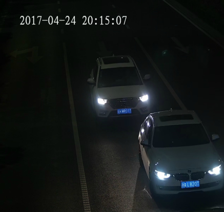

夜间画面亮度过低
典型场景如
图1
所示。
图1
夜间亮度问题

问题现象及调试方案推荐，如
表1
所示。
表1
问题现象及调试方案推荐
问题现象
调试方案推荐
若整体画面亮度正常，仅车牌亮度过低
大致原因为补光灯不足造成，建议提高补光灯亮度。
登录摄像机的Web界面，选择
“
配置
>
抓拍参数
>
补光灯参数
”
。
分别调高IO:1、IO:2和IO:3的亮度。
单击
“保存”
。
整体画面亮度过低
适当调大增益限制。
登录摄像机的Web界面，选择
“
配置
>
音视图
>
图像参数
>
曝光
”
。
调大
“增益限制”
。